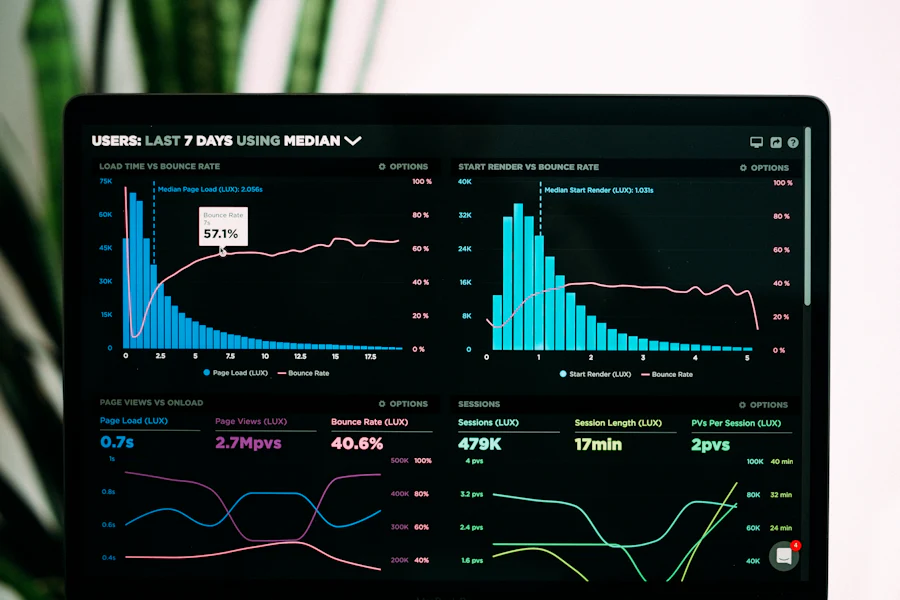

Consultoria em Imposto de Renda
Planejamento e revisão tributária para pessoas físicas e jurídicas, com análise de rendimentos, distribuição de lucros, ganhos de capital, evolução patrimonial e obrigações fiscais.
Inteligência contábil, tributária e societária aplicada às necessidades da empresa e de seus sócios, em projetos com escopo definido.
Planejamento e revisão tributária para pessoas físicas e jurídicas, com análise de rendimentos, distribuição de lucros, ganhos de capital, evolução patrimonial e obrigações fiscais.
Aconselhamento especializado para apoiar sócios e gestores na avaliação de uma decisão ou situação específica, envolvendo aspectos financeiros, tributários, societários e estratégicos.
Precisa de acompanhamento recorrente? Conheça o Perennia Advisor.
 03
03Programas de atualização fiscal, tributária, contábil e societária, incluindo reforma tributária, obrigações acessórias, SPED e rotinas de conformidade.

04Apoio à implantação, migração, parametrização fiscal e contábil, integração de processos e validação de informações, em conjunto com fornecedores de tecnologia.
Identificação de recolhimentos indevidos, revisão de apurações, levantamento de créditos e condução técnica de procedimentos administrativos de recuperação e compensação tributária.
A existência e o valor de créditos só podem ser avaliados após a análise de cada caso.
 06
06Análise de autos de infração, notificações, glosas e divergências fiscais, com elaboração de subsídios técnicos e apoio à defesa administrativa, observadas as atividades reservadas à advocacia.
 07
07Análise de demonstrações financeiras, saldos patrimoniais, conciliações, provisões e práticas contábeis, com identificação de inconsistências e recomendações.
Auditorias independentes formais, quando aplicáveis, exigem profissionais habilitados e requisitos específicos.
 08
08Avaliação econômico-financeira de empresas, estudos de valor, análise de viabilidade, due diligence contábil e tributária e suporte técnico em operações de compra, venda, fusão e aquisição.